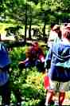
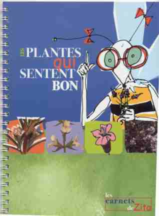

Association pour le Reboisement et la Protection du Cengle Sainte-Victoire à Aix-en-Provence, France
ARPCV
Informations au 04 42 23 18 54
Historique et objectifs de l'association
L'ARPCV se consacre à la mise en valeur et à la promotion d'un site unique : la montagne Sainte Victoire
Elle a été créée en 1986 à la suite de l'incendie qui a ravagé le Cengle, plateau rocheux situé au sud du massif, et une partie de la montagne. Son premier objectif était de réhabiliter cette partie incendiée en nettoyant puis en reboisant cet espace sinistré.
L'idée novatrice défendue par l'association était, de briser le cycle séculaire - feu - repousse de pinède hautement combustible - feu, et de planter des feuillus, capables de mieux résister au passage du feu; et en rangs serrés, de facon à empêcher le développement des arbustes de garrigue propagateurs d'incendies.

Plus de 130.000 arbres ont été plantés à ce jour par l'ARPCV sur le massif du Cengle Sainte Victoire et les communes de Lambesc, de Saint-Cannat et d'Eguilles.
Depuis le second incendie (5000 hectares brûlés) en 1989, l'association a pris une nouvelle dimension, et
s'est fixée des objectifs supplémentaires.
 Stand à la fête de la nature
Face au succès des opérations de reboisement et à la demande des établissements scolaires, cette action s'est très vite complétée par des activités d'éducation à l'environnement, telle que des sorties botaniques encadrées par un guide de l'ARPCV, des animations dans les écoles, et l'organisation de la Fête de la Nature (qui réunit 500 élèves des classes primaires, début juin, pour les sensibiliser à leur environnement).
L'association réalise également des ouvrages pédagogiques (livres) destinés à valoriser les richesses de Sainte Victoire, et des contes livrets destinés aux jeunes enfants afin de leur faire mieux connaître la nature.

L'association regroupe une centaine de membres bénévoles.